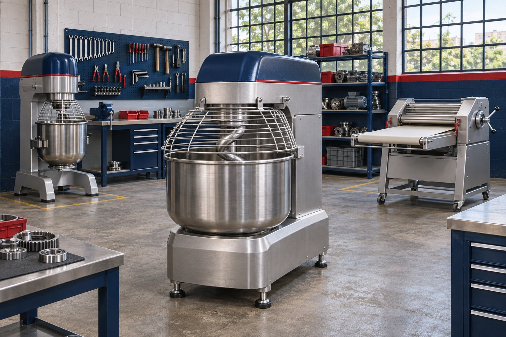
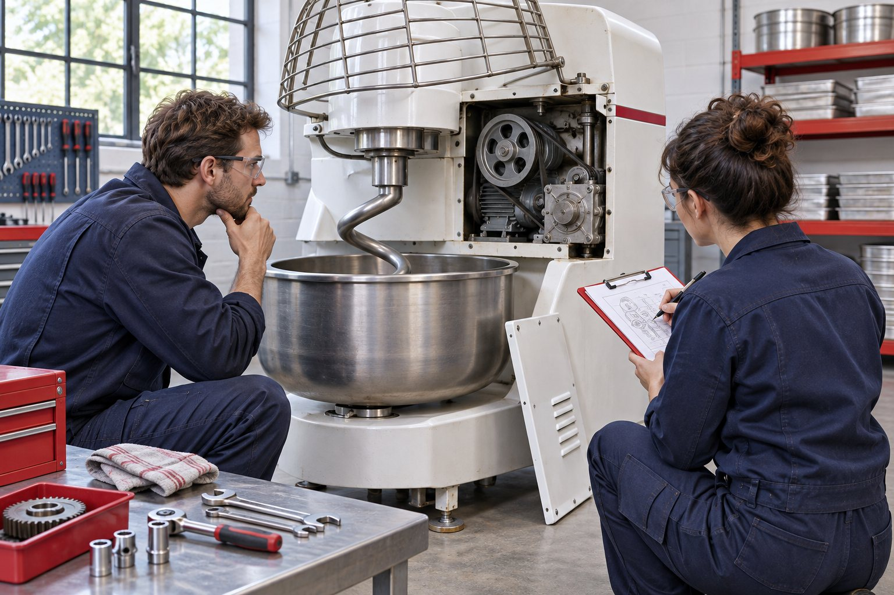
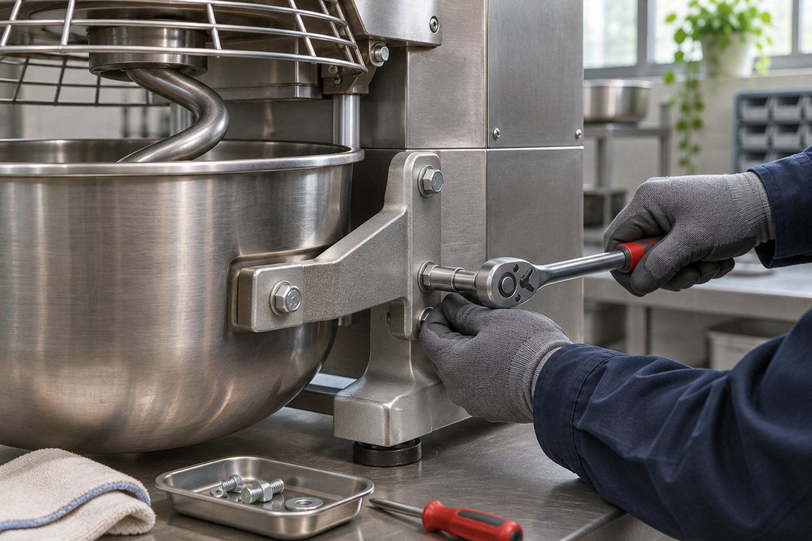

Transparência
Comunicação clara sobre o equipamento, as possibilidades de recuperação e as etapas do trabalho.
Há mais de 30 anos, recuperamos o valor de máquinas industriais e ajudamos negócios da panificação a continuarem produzindo.

A RENOVAPAN atua na reforma, recuperação e comercialização de máquinas industriais para panificação. Nossa trajetória nasceu do trabalho prático e do compromisso em encontrar soluções para equipamentos que ainda têm muito a entregar.
Unimos experiência mecânica, atenção aos detalhes e proximidade com o cliente para avaliar cada necessidade de forma responsável.
Comunicação clara sobre o equipamento, as possibilidades de recuperação e as etapas do trabalho.
Cada máquina é tratada considerando sua função, seu contexto de uso e a realidade da operação.
Décadas de prática aplicadas à análise e recuperação de equipamentos de diferentes categorias.
Atendimento humano para entender o desafio e orientar o próximo passo com objetividade.
Cenas ilustrativas do universo da recuperação de equipamentos. As imagens foram geradas por IA e não retratam a oficina ou a equipe real da RENOVAPAN.


Conte um pouco sobre o equipamento e sua necessidade.